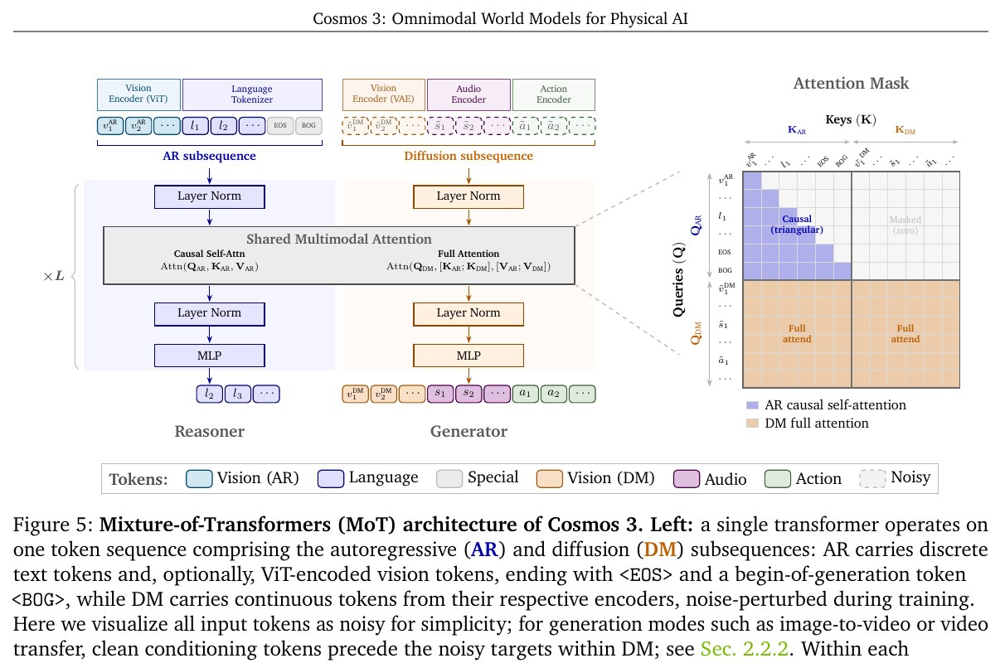
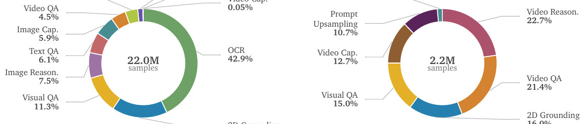
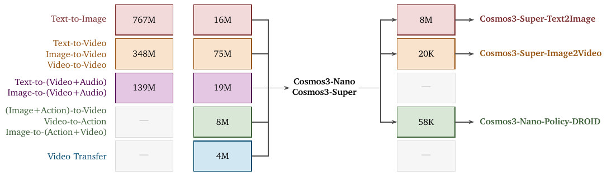

速览
五条要点
一个双塔模型覆盖 VLM、生成器、世界模型和策略模型
每层有两套参数：AR 塔做因果自注意力，DM（扩散）塔以 AR 与 DM 两段的 K/V 一起做全注意力；两塔都从 Qwen3-VL 初始化§2.3。动作也是一类 token，只需切换哪些 token 是干净的、哪些带噪，就能在正向动力学、逆向动力学和策略三种模式之间切换图 4。
caption 全程是结构化 JSON
所有阶段都用 JSON caption 替代自由文本，captioner 是两个经 LoRA 微调的 Qwen3-VL-8B，图像标注加了“四象限 + 中心”扫描§3.2.1 · 附录 A。caption 质量拆成两项评：precision 逐条对着原媒体核验原子断言，recall 对照人工断言清单。原文只说 recall 显著提高，没给具体数字。
视频生成：开源第一，部分指标超过 Veo-3.1
PAIBench-G 上 Super 的 T2V 为 80.0、I2V 为 82.8，Veo-3.1 为 79.1 / 82.6表 12；Human World Bench 上 Super 71.9，Veo-3.1 67.8表 14。T2I 后训练版的 UniGenBench 为 91.36表 11。
先做统一动作 mid-training 是有收益的
在 RoboLab 的 Specific 指令下，Nano-Policy-DROID 成功率 39.7%，π0.5 为 28.1%表 19。LIBERO-10 上训练 500 步时，MT-init 已达 24.6%，PT-init 仍是 0.0%表 20。
看数字前先注意
评测时会先用 Claude Opus 把 prompt 改写成 JSON§6.2.1–6.2.3。Artificial Analysis 文生图榜的提交带了 agentic 外环（GPT-5.5 改写，Gemini 3.1 Pro 打分）附录 B.7。音频的 PQ 落后于闭源模型表 15。正文与表格之间有多处数字不一致（见 §09）。
架构：MoT 双塔 + 统一 token 排布
AR 子序列负责理解，扩散子序列负责生成。两段在每层只通过共享注意力交互，其余参数完全独立。

编码器 §2.1
- 理解用 ViT：patch 16×16，再用两层 MLP 合并 2×2 个 token；沿用 Qwen3-VL 的 DeepStack 和插入文本时间戳的做法；与主干一起训练。
- 生成用 VAE：沿用 Wan2.2-TI2V-5B 的 VAE，时间压缩 4×，空间压缩 32×32（16×16 压缩后再做 2×2 patch 合并）；训练时冻结。
- 音频 VAE：48 kHz 立体声，hop 为 1920，得到 25 token/s；冻结。
- 动作：每种具身领域 k 有各自的线性输入 / 输出投影 W(k)，从头训练；6D 旋转经 SVD 还原为 SO(3)。
统一动作表示 §2.1.3 · 图 3
- 每个动作由三部分组成：自身位姿增量（9D，即 3D 平移 + 6D 旋转）、末端执行器位姿增量（9D）、抓取状态（夹爪 1D，手部为 5 指 × 3D = 15D）。
- 位姿用相邻两帧 SE(3) 位姿的相对变换（伪动作），避开 PID 等控制器细节；抓取状态记录的是当前值，不是差分。
- 各形态维度：自动驾驶 / 相机 9D，单臂 10D，双臂 20D，人形机器人 29D，第一视角人手 57D。
位置编码：绝对时间 MRoPE §2.4
- 每秒时间步数（TPS）：视频为 FPS / 4，音频为 48000/1920≈25，动作取采样频率。
- 每前进一个 token，时间索引增加 δt = TPSbase / TPS，其中 TPSbase = 24/4 = 6。按此计算，16 / 24 / 30 FPS 视频的 δt 分别为 1.5 / 1 / 0.8图 6，音频约为 0.24推算。
- AR 段与扩散段之间插入 15000 的时间间隔。不加这个间隔时，前几帧会过饱和并出现棋盘格伪影，Super 上尤其明显。
三种动作模式（同一条样本） 图 4
- 正向动力学 FD
- 动作干净，视频带噪：给定动作预测画面
- 逆向动力学 ID
- 视频干净，动作带噪：从画面反推动作
- 策略 Policy
- 视频和动作都带噪，联合去噪
另有 Video transfer 模式：控制视频（边缘 / 深度等）作为干净条件，RGB 视频作为噪声目标式 (6)。
三档规格
| Variant | 总参数 | LLM 层数 | Hidden | 注意力头 | KV 头 | 头维度 | FFN | 初始化 |
|---|---|---|---|---|---|---|---|---|
| Cosmos3-Edge | 4B | 28 | 2,048 | 16 | 8 | 128 | 9,216 | 自研 2B LLM，从头训练 15T token附录 D |
| Cosmos3-Nano | 16B | 36 | 4,096 | 32 | 8 | 128 | 12,288 | Qwen3-VL-8B |
| Cosmos3-Super | 64B | 64 | 5,120 | 64 | 8 | 128 | 25,600 | Qwen3-VL-32B |
来源：表 2、§2.5。总参数 = 两塔之和（论文写法是“16B 模型，基于 8B 稠密 transformer”）。Edge 的 LLM 沿用 Qwen3-1.7B 结构，但去掉了 QK norm，FFN 激活换成 ReLU²。
和前代 / 同类相比改了什么
- 相对 Cosmos-Predict2.5 / Transfer2.5：以前生成和控制分属不同模型，Transfer2.5 每种控制模态各接一个 ControlNet 分支；现在全部并进一个主干，控制视频直接作为条件 token 输入§6.2.4。
- 相对 BAGEL 式 MoT（Deng et al., 2025）：论文承认两者解码层结构相近，区别在训练策略、位置编码和能力范围§2.3。
- 相对 Cosmos-Reason2：general 平均分更高，论文归因于预训练数据多出的 20%§6.1。
- 训练上：Reasoner 不再单独做“只训 projector”的对齐阶段，所有组件从一开始就联合训练§4.1.1；Generator 预训练期间冻结 Reasoner 塔§4.2.1。
数据：Reasoner、Generator、音频、动作
两条数据线：Reasoner 用图文 / 视频文本做理解，Generator 用大规模图像、视频、音频、动作做重建式训练。只有原文给出比例的地方才画比例条。
4.1 Reasoner 数据
| 模态 | 预训练 | SFT |
|---|---|---|
| 图文（媒体数） | 18,814,952 | 1,051,513 |
| 视频文本（媒体数） | 1,016,299 | 1,079,200 |
| 纯文本（对话数） | 2,170,762 | 40,960 |
| 合计 | 22,002,013 | 2,171,673 |
来源：表 3。SFT 中视频文本约占一半，论文写“50%”，按表计算为 49.7%推算。预训练数据中 19.7M 从 Nemotron Nano 2 数据集选出，另外 2.3M 为补充的数学、视频、grounding 和指令数据§3.1.1。

预训练构成 §3.1.1 正文给出
SFT 构成 读自图 7
清洗流程：语义去重 → AI 判官
图文 / 纯文本用 Qwen3-VL-Embedding-8B，视频用 PE-Core-G14-448 先 K-means 分簇，簇内余弦相似度 > 0.95 的样本删除 删除 4.23%§3.1.1
阈值 5 保留 46%（用于 SFT）
按类别看：阈值越高，删除越偏向某些类别。referring-expression grounding 被删得最多，图像描述和 VQA 也明显减少；OCR 在阈值 2 时基本不受影响，到阈值 5 才大幅下降。因此预训练选“最低的非平凡阈值”2，SFT 选 5§3.1.1。各类别的具体保留率原文未给数字。
SFT 数据清单（按领域）数字均出自 §3.1.2
| 领域 / 能力 | 数据与规模 |
|---|---|
| 空间：2D / 3D grounding | 框和点统一归一化为 JSON，2D 主要来自 LocateAnything；3D 从扫描场景生成相机坐标系 3D 框，直接监督最终框，不经 2D 中间步骤 |
| 时间事件理解 | 人工稠密时序 caption（每个动作平均 1.8 秒、14.2 个词）；另有 55K 条视频（2.6K 小时）、743K 个（起点, 终点, caption）三元组；FoundationMotion 每个片段出 10 道四选一题；相机运动标注 |
| 物理合理性判断 | Cosmos HUE 人工标注 13.5K 条（来自 1K 个生成视频）；VideoPhy-2 的 3.4K 条视频（200 种动作，1–5 分） |
| 结构化场景扩写 | （简短输入 → 结构化 caption）配对；输入长度（简短 / 详细等）与提问风格（请求式 / 陈述式等）交叉组合生成指令变体，规范形式采样更多 |
| 自动驾驶 | 人工 CoT 超过 10K 条视频，自动标注约 1.1M 条；Nexar 行车记录超过 24K 条（6 FPS，最长 300 秒）；MADS 3D 车辆 grounding（约 1 FPS，100 m 以内） |
| 机器人 | 动作 CoT：Qwen3-VL-72B 生成推理，Molmo-7B 做定位，MolmoAct / DROID 提供路径点；MimicGen 子任务切分 3.6K 条（另留 60 条做零样本评测）；BEHAVIOR-1K 83K 条；手术 VQA 398K 轮对话 / 2.2M 张图 |
| 智能基础设施 | 仓库空间智能：从 873K 条 QA 中抽 80K 条均衡样本；行人：208K 张图、5.6M 个人工框（已模糊处理）；CARLA 3.4K 条；TAR 3.6K 条视频（26 小时）、44K 条标注（原文写作“3,6K”）；1K 条监控片段 |
4.2 Generator 图像 / 视频数据

来源：§3.2.1。美学 / 写实度阈值的具体数值原文未披露；原始数据来源只写了“diverse data sources”，未列明。
预训练语料分辨率 / 画幅 §3.2.1
| 占比 | 图像 | 视频 |
|---|---|---|
| 720p | 26.8% | 36.4% |
| 480p | 26.0% | 30.8% |
| ≥1080p | 25.2% | 12.2% |
| 16:9 | 52.0% | 97.3% |
| 1:1 | 25.2% | — |
767M 张图出自 7.8B 张原图，保留约 9.8%推算。
Mid-training 视觉数据构成 §3.2.1 给出比例
合成图经过“仔细的拒绝采样”，用于补充少见概念和物体组合；文字渲染图用于补足画面内清晰文字。
合成数据（SDG），全部开源
| 数据集 | 片段数 | 分辨率 / FPS | 深度 | 分割 | BBox | 物理状态 | 相机 | Caption | 内容 |
|---|---|---|---|---|---|---|---|---|---|
| SDG-PhyxSim | 76,489 | 1920×1080 / 30 | ✓ | ✓ | — | ✓ | ✓ | ✓ | 刚体碰撞、铰接、形变、流体、光学 |
| SDG-RobotSim | 208,022‡ | 不固定 | 部分 | 部分 | — | 部分 | ✓ | ✓ | 6–8 种机器人形态的操作与移动 |
| SDG-DriveSim | 264,000 | 3840×2160 / 24 | — | — | — | — | — | ✓ | 常规与长尾交通场景，约 1,467 小时 |
| SDG-SynHuman | 236,937 | 1920×1080 / 30 | ✓ | — | — | — | ✓ | — | 数字人与多人交互，5,841 小时 |
| SDG-Warehouse | 122,952 | 1920×1080 / 30 | ✓ | ✓ | ✓ | — | ✓ | — | 叉车与人近距离险情、火灾、碰撞、取货 |
来源：表 22、附录 C。‡附录 C.2 写的是“public v1.0 release contains 386,270 RGB MP4 clips”，与表 22 不一致，原文没有解释。Embedding 分析显示 5 个 SDG 都远离预训练分布：CosSim 0.589–0.712，预训练自身参考值为 0.796表 25。
Video transfer 数据 §3.2.1
- 从预训练池中选 3M 条视频；边缘和模糊控制在训练时现算（Canny、高斯模糊、双边滤波，参数随机）。
- 深度和分割事先算好，分别用 Video Depth Anything 和 SAMv2。
- 驾驶场景地图控制用 MADS：1.1M 条样本，每条 7 路同步相机，30 FPS，覆盖 14 个地区。
后训练数据 §3.2.1 · §4.2.3–4.2.4
- T2I：完全不用通用网络数据，只用合成图、文字渲染图和高质量真实图（图 8 记为 8M）。Stage 1 配比为真实 45% / 合成 40% / 纯文字渲染 15%；Stage 2 用 470k 条“超高质量”图文对。
- I2V：1,000 条人工精选视频 + 约 20k 条合成视频（约占 token 的 6%）+ 过滤后的预训练数据（由 agentic 流程定位模型弱点，再到预训练池检索）；另混入 20% 的 T2I 图像 token。
- 视频 SFT 集合：合成视频、人工精选真实视频，以及“按 embedding 相似度检索出的常见失败案例”。
结构化 caption：全阶段统一用 JSON
为什么改用 JSON §3.2.1
论文的观察是：自由文本 caption “precise but incomplete”，描述得准，但复杂场景容易漏细节。预定义字段能逼着标注系统性覆盖物体、属性、关系和场景信息，提高 recall，同时保持 precision。
- Captioner：图像和视频各有一个 LoRA 微调的 Qwen3-VL-8B。视频按 8 FPS 采帧，temperature 0.7，像素上下限沿用 Qwen3-VL 默认值附录 A.1。
- 图像：四个象限加中心区域分别描述，再合并（quadrant_scan）。
- 视频：额外做一遍只标时序变化的第二轮标注。
- Caption 评测：precision 由 VLM 把 caption 拆成原子断言，逐条对照原图 / 原视频核验；recall 用人工整理的原子断言清单，由 LLM 判断 caption 覆盖了哪些。测试集专挑难标注的样本。
Schema 骨架（节选） 附录 A.2–A.3
{
"subjects": [{ "description", "appearance_details",
"relationship", "location", "relative_size",
"orientation", "pose",
// 人物：clothing / expression / gender / age / skin_tone…
// 计数敏感：number_of_hands / fingers / legs …
"action", "state_changes" }], // 视频
"background_setting", "lighting": {…},
"aesthetics": {…}, "cinematography": {… , "camera_motion"},
"style_medium", "artistic_style", "context",
"text_and_signage_elements": [{ "text", "category",
"appearance", "spatial", "spatial_temporal" }],
"quadrant_scan": { "top_left", …, "absolute_center" },
"comprehensive_t2i_caption", // 图像：自然语言总结
"actions": [{ "time", "description" }], // 视频
"segments", "transitions", "temporal_caption",
"resolution", "aspect_ratio", "duration", "fps",
"audio_description"
}
T2V 训练时，时长、FPS、时间戳作为 JSON 字段输入，模型因此能按指定时长生成§4.2.1。
4.3 音频数据：只保留与画面有因果关系的声音
规模 §3.2.2
- 预训练
- 138.9M 个带可用音轨的片段（全部取自视频预训练池）；其中 62.5M 条短于 30 秒，用 Qwen3-Omni-Captioner 生成音频描述
- Mid-training
- 18.8M = 12.8M 非语音 + 6M 唇形同步的语音
原则：语音只在对得上可见人脸时保留；非语音样本去掉画外人声；会盖住目标声音的非乐器 BGM 去掉。
判定链 §3.2.2
- SAM-Audio 把音频分成语音轨和剩余轨。
- SyncNet：has_face 为真且 lip_sync_confidence ≥ 3.0，判为语音同步。
- FireRedASR2S 估计 speech_ratio 和 music_ratio；music_ratio ≥ 0.1 记为 high_music。
- 对 high_music 片段，用 Qwen3-VL 判断是否为乐器演奏，是则保留音乐。
- 音轨被改动后再跑一遍检测（例如语音分支要求 speech_ratio ≥ 0.05 且 music_ratio = 0），并检查不是静音：max_abs ≥ 0.007，p50_db ≥ −80，active_ratio ≥ 0.2。
- 音轨改了就重新写 caption；语音样本用 Qwen3-ASR 转写，再由 GPT-OSS-120B 与音频描述合并。
4.4 动作数据
按小时计的分布 §3.2.3 · 图 9
处理方式：按维度归一化到约 [−1, 1]；多视角拼成一张画布，布局写进元数据；空闲动作不删，记录空闲步数，供采样时平衡§3.2.3。
机器人数据按形态拆分表 4
| 形态 | 任务数 | 段数 | 小时 |
|---|---|---|---|
| AgiBot | 338 | 239.4K | 4.37K |
| Franka Panda | 67.5K | 76.3K | 442 |
| Google Robot | 599 | 87.2K | 351 |
| WidowX-250 | 21.8K | 50.4K | 100.1 |
| UMI | 43 | 38.3K | 67 |
| UR | 114 | 25.0K | 35 |
| 合计 | 90.4K | 516.7K | 5.36K |
4.5 已披露规模汇总
| Generator 模式 | 预训练 | Mid-training | 后训练 | 备注 |
|---|---|---|---|---|
| Text-to-Image | 767M | 16M（正文 15.6M） | 8M | 后训练得到 Super-Text2Image |
| T2V / I2V / V2V | 348M（正文 347.7M） | 75M（正文 74.7M） | 20K | 后训练得到 Super-Image2Video |
| 视频 + 音频 | 139M | 19M | — | 正文为 138.9M / 18.8M |
| 动作（FD / ID / Policy） | — | 8M | 58K | 后训练得到 Nano-Policy-DROID |
| Video transfer | — | 4M | — | 3M 通用控制 + MADS 1.1M |
来源：图 8 与 §3.2 正文。各数据源（网页 / 授权 / 内部）在预训练中的占比原文未披露。
训练配方
顺序是：先训 Reasoner，用它的权重初始化 Generator 塔，再按 预训练 → mid-training → 分模态后训练 推进。原文没有 RL 或偏好优化阶段，所有后训练都是 SFT。
Reasoner 预训练
- 目标
- next-token
- 轮数
- 2 epoch
- 序列
- ≤16k token
- LR
- 5e-5（ViT 5e-6）
- β
- (0.9, 0.999)
- wd
- 0.05
Reasoner SFT
- 步数
- 8200
- batch
- 512
- LR
- 1e-5（ViT 1e-6）
- warmup
- 1000 步
- β
- (0.9, 0.95)
- wd
- 0.1
Generator 预训练
- 可训参数
- 仅生成塔
- LR
- 1e-4，线性衰减到 0.30×
- β
- (0.9, 0.99)
- 文本 dropout
- 10%
- Nano
- 31.05T token
- Super
- 17.86T token
Generator mid-training
- 新增
- 动作、transfer
- shift
- 3 / 5 / 10
- 动作 loss
- ×10
- LR
- 1e-4，LambdaLinear
- Nano
- 2.4T token
- Super
- 1.9T token
Generator 目标与多分辨率 §4.2
- 所有模态都用 rectified flow 预测速度 v* = ε − x₀，条件 token 不计 loss。噪声水平按模态各自采样：图像 / 音频 / 动作用 logit-normal，视频用 mode sampling（论文称效果更好）。
- 分辨率三档：256p / 480p / 720p，预训练 shift 分别为 1 / 3 / 5，最多帧数 400 / 400 / 300。每档只用原生分辨率不低于该档的素材。
- 批次配比 图像 : 256p 视频 : 480p 视频 : 720p 视频 = 1:1:2:1；序列打包到固定 74,000 token，不做 padding。
- FPS 有两路条件：MRoPE 时间轴缩放，以及在 JSON 中写明 duration / FPS。附录 E.2 显示两者叠加最好。
Mid-training 数据配比 表 6
分模态后训练（各自独立，结构不变）
Super-Text2Image
- Stage 1：20k 步，LR 1e-4，warmup 2k，真实 / 合成 / 文字 = 45 / 40 / 15%
- Stage 2：2k 步，470k 条超高质量图文对
- 上下文 70k token；只用分辨率高于 720p 的图§4.2.3
Super-Image2Video
- 480p，189 帧（24fps 下约 8 秒）
- 10k 步，LR 1e-5，约 50B token
- 只用 I2V 形式训练视频，另混 20% T2I token§4.2.4
Nano-Policy-DROID
- 从 Nano mid-training 权重继续；动作编码器、解码 MLP 和 embedding 重新初始化，学习率 ×5；LR 2e-4
- 输入：本体状态 + 三视角画布（540×640）；输出未来 32 步绝对关节位置（15Hz），并附带预测视频
- 推理：4 步，shift 5，CFG 3，不解码视频 latent；部署在 2 张 RTX Pro 6000§4.2.5
默认采样配置表 21
| 模型 / 模态 | steps | guidance | shift | 负向提示 |
|---|---|---|---|---|
| Nano / Super 音视频 | 50 | 6 | 10 | 附录 B.6 |
| Super-Text2Image | 50 | 4 | 3 | 空串 |
| Super-Image2Video | 50 | 6 | 5 | 从用户 prompt 自动派生（附录 B.3） |
| Nano / Super FD / ID | 50 | 1 | 5 | 空串 |
| Nano-Policy-DROID | 4 | 3 | 5 | 空串 |
| Nano / Super Transfer | 50 | 文本 3 / 控制 1.5 | 10 | 附录 B.6 |
负向提示按模型和模式分别在自动化基准上挑选（§6.3.1）。Transfer 用双权重 CFG，每步跑 3 次前向（§6.2.4）。吞吐：Nano 和 Super 的 MFU 分别为 0.23 和 0.30（§5.2.8）。
评测
记号：* 表示后训练变体（例如 T2I 一栏的 91.36 来自 Super-Text2Image）；† 表示闭源模型。Cosmos 3 的生成评测都先用 Claude-Opus（T2I 用 4.7，视频和音频用 4.6）把 prompt 改写成训练时的 JSON 格式§6.2.1–6.2.3。
总览（节选）
| 模型 | General | Robotics | Smart infra. | Driving | T2I | T2V | I2V | Audio | FD: Robot | Policy: Robot |
|---|---|---|---|---|---|---|---|---|---|---|
| Cosmos3-Super | 73.7 | 57.8 | 62.6 | 79.3 | 91.36* | 80.0 | 82.8 | 7.31 | 26.0* | – |
| Cosmos3-Nano | 69.6 | 55.1 | 61.0 | 76.0 | 84.61 | 79.4 | 82.7 | 7.34 | 25.5* | 39.7* |
| Gemini 3.1 Pro† | 77.5 | 58.2 | 58.6 | 47.2 | ||||||
| Qwen3-VL-32B | 72.8 | 52.6 | 56.1 | 40.7 | ||||||
| Qwen3-VL-8B | 68.9 | 48.5 | 52.7 | 46.4 | ||||||
| Gemma-4-31B | 69.8 | 51.0 | 51.3 | 36.6 | ||||||
| Gemini 3 Pro Image† | 90.85 | |||||||||
| Qwen-Image-2512 | 84.25 | |||||||||
| Veo-3.1† | 79.1 | 82.6 | 7.45 | |||||||
| Wan2.2-A14B | 78.0 | 81.3 | ||||||||
| Ctrl-World | 23.0 | |||||||||
| π0.5 | 28.1 |
来源：表 1。T2I 为 UniGenBench All；T2V / I2V 为 PAIBench-G Overall；Audio 为 SoundBench AVQ；FD 为 DROID PSNR；Policy 为 RoboLab Specific 指令下的总成功率。橙框：Gemini 3 Pro Image 在表 1 中是 90.85，在表 11 中是 90.69。音频一栏表 1 只列了 Veo-3.1，但 Seedance-1.5-Pro 的 AVQ 7.64 更高（表 15）。
图像生成
| 模型 | 类型 | UniGen All | Orig | Phys | CVTG-500L GNED | PNED | CVTG-102ch GNED | PNED | Aes v2 | HPSv3 |
|---|---|---|---|---|---|---|---|---|---|---|
| Cosmos3-Super-Text2Image | 开源 | 91.36 | 93.34 | 89.54 | 80.88 | 89.08 | 32.02 | 41.22 | 5.91 | 11.60 |
| Cosmos3-Super | 开源 | 87.33 | 85.21 | 89.64 | 66.77 | 70.97 | 8.48 | 16.31 | 5.76 | 9.49 |
| Cosmos3-Nano | 开源 | 84.61 | 87.32 | 82.12 | 24.23 | 26.53 | 4.63 | 9.70 | 5.76 | 8.99 |
| Gemini 3 Pro Image | 闭源 | 90.69 | 92.81 | 89.74 | 59.24† | 71.79† | 46.00 | 76.40 | 5.70 | 11.78 |
| FLUX.2-dev | 开源 | 87.60 | 89.77 | 85.61 | 74.71 | 84.98 | 44.33 | 68.74 | 5.75 | 11.38 |
| Qwen-Image-2512 | 开源 | 84.25 | 87.32 | 81.44 | 79.68 | 90.86 | 46.33 | 71.26 | 5.92 | 11.03 |
| Hunyuan 3.0 | 开源 | 84.02 | 87.68 | 80.67 | 71.40 | 87.68 | 49.05 | 71.31 | 5.90 | 11.93 |
| Z-Image-Turbo | 开源 | 78.14 | 81.53 | 75.03 | 75.20 | 86.95 | 49.18 | 73.32 | 5.70 | 11.36 |
来源：表 11。UniGenBench 共 1,170 条 prompt：原版 600 条，加上论文新增的 570 条 Physical-AI prompt；由 Gemini 3.1 Pro 对每个测试点判通过 / 不通过；所有模型都在 1024×1024 下生成。†：Gemini 3 Pro Image 经常输出大小写不对的文字（如 “Adventure” 写成 “ADVENTURE”），排除这类错误后 CVTG-500L 为 GNED 75.97、PNED 91.45。中文文字渲染（CVTG-102ch）是 Cosmos 的明显短板：32.02 / 41.22，Qwen-Image 为 46.33 / 71.26。Artificial Analysis 文生图榜：开源第 1，总榜第 4（2026-05-28，带 agentic 外环，见附录 B.7）。
视频生成
| 模型 | PAIBench-G T2V | PAIBench-G I2V | RBench I2V | HUE T2V | HUE I2V | HWB I2V |
|---|---|---|---|---|---|---|
| Ground Truth（真实视频） | — | — | — | 93.6 | 94.4 | — |
| Cosmos3-Super | 80.0 | 82.8 | 58.1% | 89.3 | 89.6 | 71.9 |
| Cosmos3-Nano | 79.4 | 82.7 | 58.4% | 87.6 | 88.6 | 66.9 |
| Wan2.2-A14B | 78.0 | 81.3 | 50.7% | 88.2 | 88.4 | 60.7 |
| HunyuanVideo-1.5 | 76.5 | 81.7 | 46.0% | 86.5 | 85.6 | 54.7 |
| Cosmos-Predict2.5-14B | 76.4 | 81.1 | — | 82.1 | 83.0 | 38.7 |
| Veo-3.1† | 79.1 | 82.6 | 56.3% | 91.3 | 89.7 | 67.8 |
| Seedance-1.5-Pro† | 76.9 | 80.8 | 58.4% | 90.0 | 87.6 | — |
| Wan 2.6† | 78.6 | 81.9 | 60.7% | — | — | — |
来源：表 12、表 14。PAIBench-G 共 1,044 对 prompt，每条跑 5 个 seed，720p、189 帧；裁判用 Qwen2.5-VL-72B。论文说公开榜用的 Qwen3-VL-235B 裁判结果不可复现（脚注 2）。RBench 共 650 例，单 seed，121 帧。HUE 取 100 条 prompt × 5 个 seed，题目由 GPT 5.2 流水线生成，每题两人独立标、有分歧时由第三人仲裁，95% 置信区间约 ±0.6（附录 F）。Artificial Analysis 图生视频榜（无音频）：开源第 1，总榜第 22（2026-05-28）。
Physics-IQ 表 13
| 模型 | I2V | +WMReward BoN | V2V | +WMReward BoN |
|---|---|---|---|---|
| Cosmos3-Super | 43.8 | 48.9 | 59.7 | 63.4 |
| Cosmos3-Nano | 40.2 | 43.8 | 50.2 | 57.7 |
| Sora2† | 42.3 | 46.4 | — | — |
| Wan2.2-A14B | 38.3 | 44.4 | — | — |
| Magi-1 | — | — | 56.0 | 62.6 |
评测时用 prompt upsampler（参考 PhyT2V 的迭代式改写）从起始帧或条件视频生成文本。
音视频：SoundBench 表 15
| 模型 | AVQ | SAV | AVAlign | PQ |
|---|---|---|---|---|
| Cosmos3-Super | 7.31 | 8.34 | 8.14 | 6.28 |
| Cosmos3-Nano | 7.34 | 8.35 | 8.16 | 6.32 |
| Seedance-1.5-Pro† | 7.64 | 8.21 | 8.06 | 7.06 |
| Veo-3.1† | 7.45 | 8.21 | 8.01 | 6.68 |
| LTX-2.3（开源） | 7.10 | 7.80 | 7.58 | 6.39 |
AVQ = 0.5·SAV + 0.5·AQ（原文公式写作 AQ，按表中数值核算即为 PQ），其中 SAV = 0.6·SA + 0.3·AVAlign + 0.1·VisualSupport。语义和对齐上 Cosmos 领先，音质 PQ 落后。144 条非语音 prompt，取自 FoleyBench；checklist 由 Claude Opus 4.7、Gemini 3.1 Pro、GPT 5.5 投票确定。
动作
MT-init 对比 PT-init 表 18
- 相机正向动力学：Super（MT-init）RRE 0.142°、RTE 0.026 m、ATE 0.99 m；Lingbot-World 为 0.299° / 0.057 m / 2.88 m。评测用内部 100 条 5 秒片段。
- 自动驾驶逆向动力学：Nano（MT-init）RRE 0.211、ATE 0.98 m；VGGT 的 ATE 为 23.46 m。用的是内部驾驶数据。
- 第一视角正向动力学：PSNR 16.19（Super MT-init），LOME 为 9.36。
- DROID 正向动力学：PSNR 26.04 / 25.52（Super / Nano MT-init），Ctrl-World 为 22.99。
换到新形态的适应速度（LIBERO-10） 表 20
| Nano | 500 步 | 1000 | 1500 | 2000 |
|---|---|---|---|---|
| MT-init | 24.6% | 91.4% | 95.8% | 97.4% |
| PT-init | 0.0% | 73.8% | 93.4% | 95.2% |
每个 checkpoint 跑 500 次 rollout。另有两个榜单：RoboArena 第 1（2026-05-30），MolmoSpaces All Combined 第 1，oracle 成功率 39.0%（2026-06-20）。
Video transfer 与消融（附录 C / E）表 16 · 17 · 26 · 28 · 29 · 30 · 31
| PAIBench-C 单控制 | DOVER↑ | Seg mIoU↑ | Blur SSIM↑ | Edge F1↑ | Depth si-RMSE↓ |
|---|---|---|---|---|---|
| Cosmos3-Super | 10.14 | 0.71 | 0.91 | 0.50 | 0.58 |
| Cosmos3-Nano | 10.39 | 0.72 | 0.91 | 0.49 | 0.62 |
| Cosmos-Transfer2.5 | 9.49 | 0.68 | 0.90 | 0.45 | 0.68 |
AVBench-C 人评视频质量（1–3 分）：Super 2.86、Nano 2.82、Transfer2.5 2.59；车道线三者相差不超过 ±0.05（表 17）。
- Reasoner 是否帮到 Generator（表 28，小规模设置）：理解塔用 Cosmos3 Reasoner 初始化、对比用 Qwen3-VL-8B 初始化，T2V 的 Domain 分 73.7 → 75.7，其中 Robot 从 66.5 → 71.3；两者 Quality 都是 73.0。
- FPS 控制（表 29）：Composite 分数 Base 8.51、只加文本控制 9.28、只加 MRoPE 缩放 9.63、两者都加 9.81。
- 预训练是否加音频（表 30）：加音频后 T2V Overall 78.6 → 79.1，I2V 81.7 → 82.2。
- 动作模式联合训练（表 31，PushT + Edge）：联合训练使 ID MSE 从 1.11e-3 降到 3.09e-4，策略覆盖率 74.1% → 77.3%，但 FD PSNR 从 27.13 降到 26.22。
- SDG 单独消融（表 26）：每加一种 SDG，Overall 变化都在 ±0.12 以内；Human 一项在所有变体里都下降（−0.38 到 −0.69）。SDG-All 在 9 项里 8 项为正。
新在哪
动作作为一等模态，一条样本切换三种动作模式
四类具身形态共用“自身位姿 / 末端位姿 / 抓取”三部分表示，只在输入输出投影层按领域区分；改变哪些 token 带噪，同一条样本就能用于 FD、ID 或 Policy 训练§2.1.3 · 图 4。
可核对：MT-init 在所有动作设置上都优于 PT-init（表 18–20）；附录 E.4 显示联合训练有利于 ID 和策略，但 FD 略降。
按真实时间编排的 MRoPE，加 AR 与扩散段之间的位置间隔
视频、音频、动作的 token 都换算到同一条物理时间轴（δt = 6/TPS）；AR 段与扩散段之间隔开 15000，用来消除首帧过饱和和棋盘格伪影§2.4。
可核对：FPS 消融见表 29。15000 间隔的效果没有定量消融。
结构化 JSON caption 贯穿训练和推理，Reasoner 兼任 upsampler
所有生成训练数据都标成 JSON；推理时由 Reasoner（或 Claude Opus 4.6）把用户输入扩写成同一 schema 的“场景程序”，依次写场景、时序、音频§6.3.2 · 附录 B.1。
与 DALL·E 3 的 caption 扩写思路相同；新的是一个 schema 同时覆盖图像、视频和音频，并且 upsampler 就是同一个模型的理解塔。
统一动作 mid-training，并用对照实验和协同矩阵说明它可复用
在相同配方、数据和算力下对比 PT-init 与 MT-init；按领域做两两 50/50 混合训练，得到协同矩阵。例如 WidowX 与 Google Robot 混训，FD PSNR +1.39图 28；用第一视角数据预热后再适配 AgiBot，FD PSNR 每个检查点都更高图 29。
Cosmos HUE：拆成原子二值题的人评协议，已开源
每条视频由 VLM 流水线出至多 20 道是 / 否 / 不确定题，“是”始终代表好结果，“不确定”按“否”计；双人标注加 QC 仲裁；用真实视频得分作上限参考§6.2.2 · 附录 F。
不算新的：MoT 解码层结构（与 BAGEL 相近）；embedding 聚类去重、DOVER 打分等常规清洗。
对图像编辑数据、评测和 caption 的启示
Cosmos 3 不是编辑模型，但它的 caption、过滤和人评做法可以直接借鉴。每条先写论文做了什么，再写迁移建议。迁移建议是本页的推断，不是论文内容。
C1训练和推理用同一个 schema
论文：所有阶段都用 JSON caption，推理时用 upsampler 把用户输入扩写成同一 schema，以对齐训练分布§3.2.1 · §6.3.1。
迁移建议，不是论文内容：编辑指令也定一个 schema，例如 {原图概述, 编辑操作列表, 必须保持的区域和属性, 目标外观}。训练标注和线上改写都输出这个结构，避免“训练时细、线上粗”的分布差。
C2分区扫描，防止漏标
论文：图像按四象限加中心分别描述再合并，专门照顾多主体、复杂布局附录 A.1–A.2。
迁移建议，不是论文内容：对编辑前后两张图做同样的分区描述，再逐区比较，生成“改了哪里 / 哪里没改”。小区域的局部编辑最容易在整图 caption 里漏掉。
C3precision 和 recall 分开评
论文：precision 由 VLM 把 caption 拆成原子断言、对照媒体核验；recall 对照人工原子断言清单；测试集专挑难标注样本§3.2.1。
迁移建议，不是论文内容：编辑 caption 的 precision 对照目标图核验，recall 对照人工写的“编辑点 + 保持点”清单，两个数分开报。只报一个综合分会把幻觉和漏标混在一起。
C4像素一改，caption 就重标
论文：音轨只要经过分离或去音乐，就对最终波形重新写 caption，保证文字不描述已被去掉的内容§3.2.2。
迁移建议，不是论文内容：编辑数据做过裁剪、超分、去水印、重新合成后，caption 要绑定最终训练用的像素重新生成或校验，不要沿用上游 caption。
C5指令扩写器要见过多种写法
论文：Reasoner 的 upsampling SFT 数据把输入长度（简短 / 详细）与风格（请求式 / 陈述式）交叉合成，规范形式采样更多§3.1.2；该类数据占 SFT 的 10.7%图 7。
迁移建议，不是论文内容：训练编辑指令改写器时，同一个目标结构配多种“用户口吻”的输入（一个词、口语、命令式、描述式），评测里也覆盖这些口吻。
D1判官按维度打分，取最小值
论文：Gemma-4-31B-it 对 Faithfulness / Completeness / Correctness 三项打 1–5 分，任一项低于阈值就删；预训练用阈值 2（保留 78%），SFT 用阈值 5（保留 46%）§3.1.1。
迁移建议，不是论文内容：编辑三元组的判官维度可设为“指令执行到位 / 非编辑区保持 / 画质无伪影”，取最小值；预训练用宽松阈值，SFT 用最严阈值，并要求判官附上理由，方便抽查。
D2按类别检查保留率
论文：阈值越高，删除越偏向某些类别（grounding 删得最多），所以预训练选了最低的非平凡阈值§3.1.1。
迁移建议，不是论文内容：每次调判官阈值，都按编辑类型（增、删、替换、风格、文字、人像等）列出保留率。某一类被过度删除时，宁可放宽这一类的阈值，也不要让它在训练集里消失。
D3去重用“媒体 + 任务”联合 embedding
论文：以整条对话为单位，把媒体 embedding 和指令-回复 embedding 拼起来再去重，以区分“同一张图、不同任务”和真正的重复§3.1.1。
迁移建议，不是论文内容：编辑数据按 (原图, 指令) 联合 embedding 去重；只按原图去重会误删同一张图上的不同编辑。
D4伪影分轻重，用法随阶段变
论文：约 100 个二值伪影标签，严重的直接剔除，轻微的打标后保留在预训练里；后训练彻底排除网络数据§3.2.1。
迁移建议，不是论文内容：编辑目标图上的轻微瑕疵（轻微压缩、细小边缘痕迹）可以留在预训练里，但要作为标签保存；SFT 阶段按标签筛掉。
D5从评测失败案例反查训练数据
论文：I2V 后训练用 agentic 流程找出模型弱点，再到预训练池检索对应样本；视频 SFT 里有一部分是“按 embedding 相似度检索出的常见失败案例”§4.2.4 · §3.2.1。
迁移建议，不是论文内容：把编辑评测中失败的案例做成 embedding 查询，到候选池召回近邻，人工确认后补进 SFT，形成“评测 → 补数据”的闭环。
D6合成数据按来源单独消融
论文：5 个 SDG 来源分别微调：每个来源都只拉高部分领域，Human 一项在所有来源下都下降；全部混合后 9 项里 8 项为正表 26。
迁移建议，不是论文内容：合成编辑数据（渲染、程序化、模型生成）逐个来源消融，按编辑类型看增减；特别检查人像类是否被合成数据拉低。
E1人评拆成原子二值题，加真值参考行
论文：HUE 的题目都写成“是 = 好结果”；“不确定”计入分母、不计入分子；双人标注加 QC；真实视频得分 93.6 / 94.4，用作上限参考和题库校准附录 F。
迁移建议，不是论文内容：编辑人评为每个样本生成“编辑点是否完成 / 指定区域是否保持”这类原子题；用人工精修的参考结果作 GT 行，GT 得分不到 100 的题目要修改或删除。
E2报告 prompt 改写和裁判版本
论文：生成评测都先用 Claude Opus 把 prompt 改写为 JSON；PAIBench-G 公开榜的裁判结果不可复现，于是换了裁判；评测系统为每个分数记录 checkpoint、代码版本和参数§6.2 · 脚注 2 · §5.4。
迁移建议，不是论文内容：编辑基准分开报“原始指令”和“改写后指令”两种结果，所有对比模型用同一个改写器；裁判模型的名字、版本、prompt 写进结果表。
E3不同裁判各看自己需要的信息
论文：SoundBench 先由三个大模型投票确定 checklist，再让 VLM 在看不到 prompt的情况下描述画面，最后才做语义打分，每个阶段只给需要的信息§6.2.3。
迁移建议，不是论文内容：编辑判分也拆阶段：先从指令提取 checklist，再让 VLM 不看指令描述原图和结果图的差异，最后对照 checklist 判分，降低裁判被指令措辞引导的风险。
局限与存疑
- 排名是整套系统的成绩，不只是模型本身。Artificial Analysis 文生图榜的提交用了 agentic 外环：GPT-5.5 改写 prompt，Gemini 3.1 Pro 打分，最多改写 2 轮，取最好的一张附录 B.7。所有生成评测都先用 Claude Opus 改写 prompt；SoundBench 明确只对 Cosmos 改写§6.2.3，其他基准里对比模型是否也改写原文未说明。
- 训练集和测试集可能同源。Reasoner SFT 用了 TAR、VideoPhy-2 和 HUE 标注§3.1.2，评测又用了 TARBench、VideoPhy2 和 HUE表 10 · 表 14，是否做了隔离原文未说明。Driving 平均分里 3 项有 2 项是内部基准（各 300 条和 50 条视频）§6.1。
- 没有 RL 或偏好优化。T2I Stage 2 写的是“alignment with human preferences”，但方法是 SFT§4.2.3。
- 关键设计缺消融或缺数字。JSON caption 对比自由文本只有定性描述，caption 基准没有数字；15000 位置间隔、AI 判官阈值对下游的影响都没有定量结果。已有消融都是小规模设置（256p / 480p，25K 序列）。
- 配比与来源未披露。预训练原始数据来源、各来源占比、美学 / 写实度阈值都没给；AI 判官按类别的保留率只给趋势，没给数字。
- SDG 消融的增益在噪声范围内。Overall 变化在 ±0.12 以内，原文没给 seed 数和方差表 26。
- 正文与表格不一致（核对出 8 处）：① Gemini 3 Pro Image 在表 1 为 90.85，表 11 为 90.69；② RoboLab 的 DreamZero 正文写 25.2%，表 19 为 23.9；③ HUE I2V 的 Nano 正文写 88.5，表 14 为 88.6；④ HUE 每条视频的题数，§6.2.2 和附录 F 的可靠性部分写“至多 20 题”，附录 F 的标注协议写“至多 16 题”；⑤ 图 10 题注说三种视频条件模式“均匀”采样，图中和 §4.2.1 是 70 / 20 / 10；⑥ 附录 C.7 称 SDG-All 的 Quality 72.56 最高，表中 SDG-RobotSim 为 72.72；⑦ 表 12 题注说 Nano 在 RBench 上领先，表中闭源的 Wan 2.6 为 60.7%（Nano 58.4%）；⑧ SDG-RobotSim 在表 22 为 208,022 条，附录 C.2 为 386,270 条。另外 §2.5 说“所有变体都从预训练 VLM 初始化”，而表 2 和附录 D 说 Edge 的 LLM 从头训练。
- 短板。中文文字渲染 CVTG-102ch 落后于 Qwen-Image 和 Z-Image 等开源模型表 11；音频 PQ 落后于闭源模型表 15；general 理解仍落后于 Gemini 3.1 Pro表 10。
- 榜单是某一天的快照。AA 两个榜（2026-05-28）、RoboArena（2026-05-30）、MolmoSpaces（2026-06-20，晚于 v1）都标了日期；Edge 权重尚未发布。
图表索引
| 编号 | 内容 | 本页位置 |
|---|---|---|
| 图 1（p.5） | Cosmos 3 作为 Physical AI 通用主干，统一六类模型（查看原图） | — |
| 图 5（p.11） | MoT 架构与注意力掩码 | §03 架构 |
| 图 7（p.15） | Reasoner 数据按能力类别的构成 | §04 数据 |
| 图 8（p.20） | Generator 各阶段数据课程 | §04 数据 |
| 示意图 | token 排布（本页绘制，依据 §2.2 / §2.4） | §03 架构 |
| 表 1 / 2 / 3 / 4 | 总览；规格；Reasoner 数据；机器人数据 | §06 / §03 / §04 |
| 表 6 / 21 | mid-training 配比；默认采样配置 | §05 训练 |
| 表 10–15 | Reasoner；T2I；PAIBench-G 与 RBench；Physics-IQ；HUE 与 HWB；SoundBench | §06 评测 |
| 表 16–20 | Transfer；AVBench-C；FD / ID；RoboLab；LIBERO-10 | §06 评测 |
| 表 22 / 25 / 26 | SDG 概览；与预训练分布的距离；SDG 消融 | §04 / §06 |
| 表 28–31 | 理解塔初始化；FPS 控制；预训练加音频；动作模式联合训练 | §06 消融 |